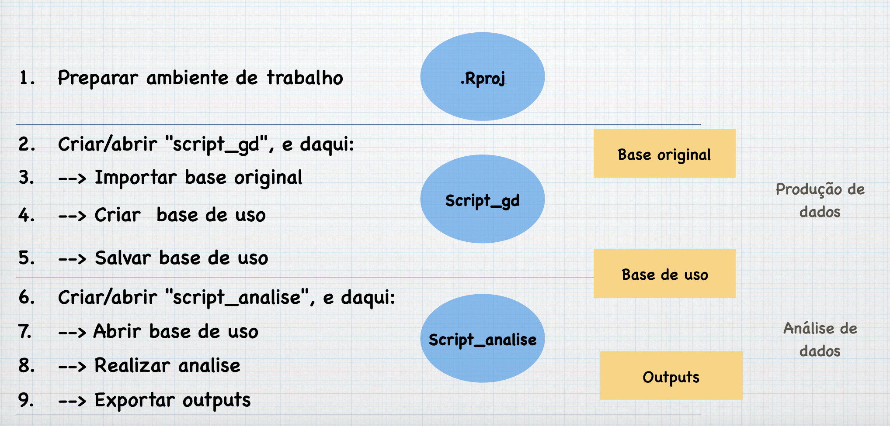

sessionInfo() Gestão do Workspace

Componentes e elementos básicos de uma sessão R
.Rproj: o ficheiro organizador
Criar a pasta do projeto (e.g “Projeto_0”).
Iniciar sessão R.Studio (clicar no ícono), e:
> clicar "File" (na barra de ferramentas principal)
> clicar "New Project"
> clicar "Existing Directory"
> [Procurar e selecionar a pasta (e.g."Projeto_0")\]
> clicar "Create Project"
Iniciar sessão
- Abrir a pasta do projeto, e:
> cliclar "File" (na barra de ferramentas principal)
> clicar no ficheiro ".Rproj" do projeto (e.g. "Projeto_0.Rproj")- Obter informação sobre a sessaõ ativa:
- Especificar numero de digitos para a sessão:
options(digits=4)
workspace
- Localizar o working directory:
getwd()- Mudar localização do working directory:
setwd ("/Users/Q/My_R/R_Project1")
# R utiliza `/` (*forward slashes*) para designar subdirectorios (diferente a Windows, similar a Mac e Unix)- Listar os ficheiros do working directory:
list.files()- Listar objectos ativos nos workspace:
ls ( ) # listar os objetos da sessão
ls(pat = "c") # listar objetos que contêm ‘c’ nos seus nomes
ls(pat= "^c") # listar objects que comecem com ‘c’
ls(pos=2) # Check the contents of the file that has been attached - Remover objectos ativos:
rm("var1" ) # remover objeto "var1"
rm(list =ls() ) # remover todos os objetos da sessão
rm(list=setdiff(ls(), "B")) # remover todo menos "B"
rm(list=setdiff(ls(), c("W", "X"))) # remover todo menos "W" e "X"
Pacotes
- Instalar pacotes externos:
install.packages ("PackageName")- Activar pacotes já instalados:
library (PackageName)
# Or: clicking packages on Window4/ Tab Packages
# Or via menu system: Packages>Load Packages - Carregar bases internas:
data(aids) # carregar base ‘aids’ (pacote ‘(KMsurv)’- Fechar um pacote:
detach ("package:aids") #detach data- Mais sobre pacotes:
search () # mostra pacotes abertos
library(help=KMsurv) # mostra info sobre pacote KMsurv
.libPaths() # localização da 'library', the ‘library’ subdirectory of R_HOME.
library () # script com os pacotes instalados e na library (= pestana FILES)
- A qual pacote um certa função?
packagename::functionname().Ajudas
?getwd # information on the “getwd” function
??getwd # information on the “getwd” function
apropos ("norm") # to find all functions in R that contains the string norm type)
Scripts
- Criar scrip
Opção a:
File->New File->R Script
Opção b:
Na barra de ferramentas da janela SOURCE:
> + -> R Script
Opção c:
Ctrl + Schift + N(Mac) PC? ?? PC?
- Guardar Scripts
Opção a:
File->New File->R Script->Save/Save as/
Opção b:
usar o ícone da janela do script
- Abrir script existente
Opção a:
File->Open File-> (search script and open)
Opção b:
duplo-click no script, na janela FILES
- Executar comandos no script
sublinhar comando ->
Cmd+ENTER(Mac)
sublinhar comando ->
Ctrl+R(Windows)
Carregar objetos
- Carregar objetos do ‘working directory’
load ("objecto_y")
load ("objectox_yx")
load (“Minhabase")
load ("WorkspaceProj1") - Carregar objetos de outros diretorios:
load ("~/0R/pastaX//objecto_y")
# se deve especificar a localização- Recolher a localização de um ficheiro:
file.choose()
Guardar objetos
- Guardar objetos no working directory:
save (y, file="object_y") # Guardar y como "object_y"
save (y, x, file="object_yx") # Guardar y and x
save (minhabase, file="Minhabase.RData") # Guardar dataframe
save.image(file="WorkspaceProj1") # Guardar workspace- Guardar objetos em outros directorios:
save (AA, file= "~/0R/objecto_y")
# objecto_y= objeto R
# "~/0R/objecto_y"= posição e nome do objeto salvado- Guardar Gráficos para pdf
pdf("Figura_1.pdf") # cria o ficheiro pdf
plot (x) # gera a figura
dev.off() # fecha o ficheiro
# http://www.statmethods.net/interface/io.html- Guardar Gráficos para jpeg:
pdf("Figura_1.jpg", width = 500, height = 500) # cria o ficheiro pdf
plot (x) # gera a figura
dev.off() # fecha o ficheiro- Guardar outputs para um ‘text file’
- Usando sink() e imprimendo:
# a) Criar o ficheiro
sink("meu_documento.txt")
# b) Especificar um título interno
print("The mean of var1 x is…")
# c) produzir os dados (o output será imprimido no .txt, não na CONSOLA)
mean (x)
plot (x)
# d) Finalizar o procedimento:
sink()b Usando sink() e cat():
# a) Criar o ficheiro
sink("meu_documento.txt")
# b) Concatenar
cat("A média de varX é...", mean(varX), "\n")
# c) Finalizar o procedimento:
sink()- Copy and paste.
Uma opção frequente é simplesmente copiar os resultados da CONSOLA ou PLOTS colar num documento Word
Importar bases
- Bases Excel:
> Environment
> Import Dataset
> From Excel- Bases SPSS:
> Environment
> Import Dataset
> From SPSS- Bases STATA:
> Environment
> Import Dataset
> From STATA
Exportar bases
- Para xlsx
library (openxlsx)
write.xlsx(Df, "Df.xlsx")- Para CSV:
write.table(Df, file="Df.csv",sep=",",row.names=F)- Para SPSS:
library(foreign)
write.foreign(mydata, "c:/mydata.txt", "c:/mydata.sps", package="SPSS")- Para SPSS:
library(foreign)
write.dta(Df, "Df.dta")
Fechar Sessão
q()